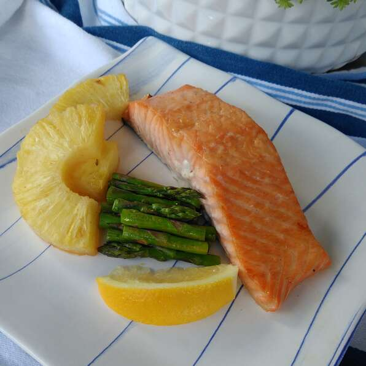

Salmon!!

Sick and tired of dry salmon try my twice seared lemon salmon. a beutiful mix of flavor
and delight. after one deligtful bake your taste buds will be on fire. best served with brocoli, pineapple,
or asparagus.
Ingretients
- Fresh atlantic salmon
- Asparagus
- Lemon
- Salt and pepper
- keeper of the dammneds heart
Steps
- grap you salmon and season it with salt and pepper. squeeze your lemon onotop
- saute your asaprgus until cooked
- add your salmon in the same pan and cook to your liking
- Quickly add the keepers heart before taking it off the pan